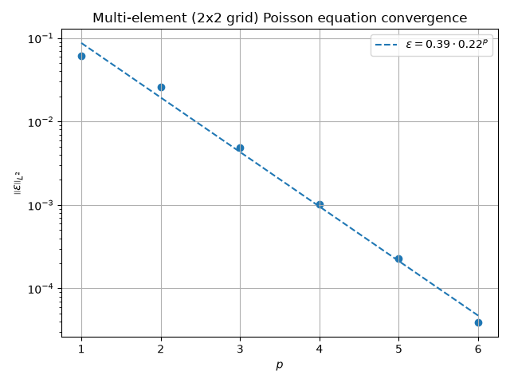
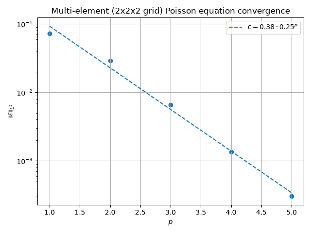
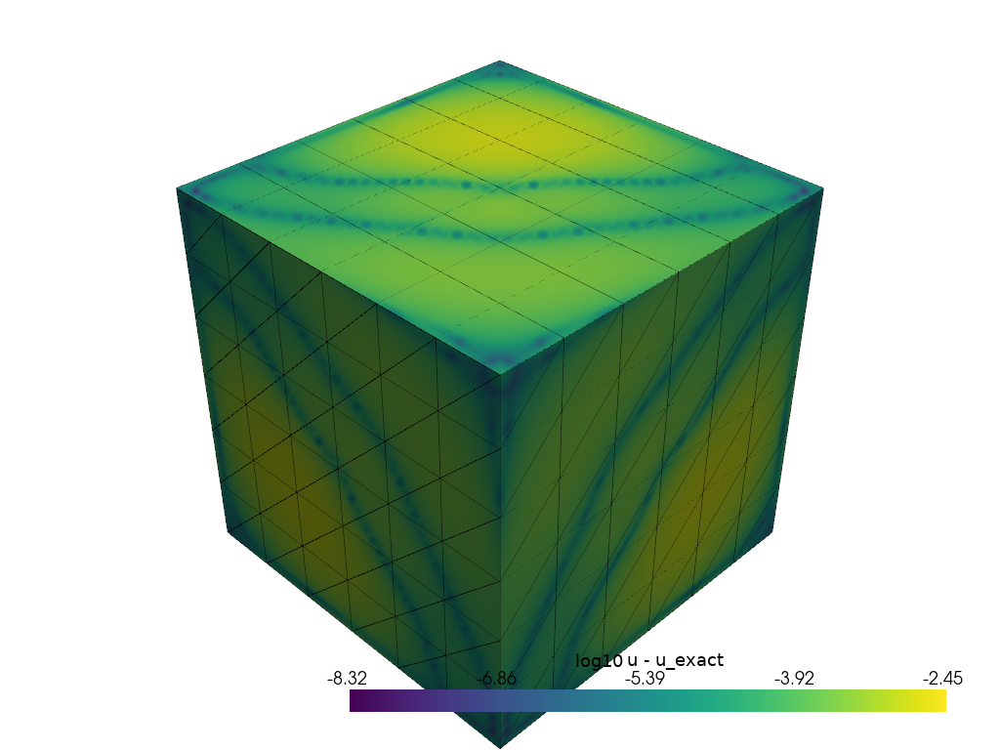
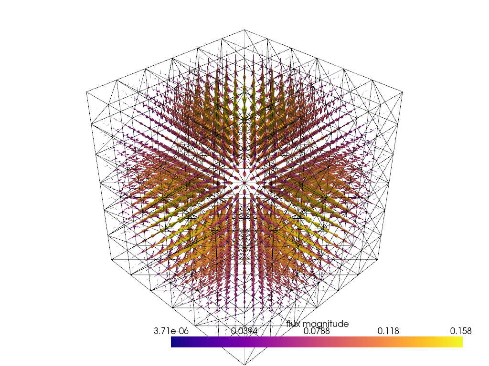

Note
Go to the end to download the full example code.
Multi-element Poisson equation#
This example demonstrates how the mixed Poisson equation can be solved on
multiple hypercube elements at once, with the continuity of the flux across
the shared faces enforced by Mesh.compute_kform_boundary_constraints().
The mixed Poisson equation is defined in the weak form as:
On a mesh of multiple elements \(\Omega = \bigcup_e \Omega_e\) the flux \(q^{(n - 1)}\) is approximated element-wise, so its continuity across every shared face \(F\) has to be enforced explicitly. This is done with a Lagrange multiplier \(\lambda^{(n - 1)}\):
The traces are assembled with Mesh.compute_kform_boundary_constraints(),
which computes the physical boundary rows of one element against the shared
face.
For this example, a 2x2 grid of four quadrilateral elements and a 2x2x2 grid of eight hexahedral elements are used, together with the same manufactured solution as the single-element Poisson example:
which gives the forcing function:
The elements are deformed: the outer boundary of the domain stays the hypercube \([-1, 1]^n\), while the interior of every element and the shared faces between elements become curved. The grid coordinates \(g_i\) are mapped by the polynomial
which vanishes on the outer boundary and is represented exactly by the
cubic geometry basis. The deformation is modest (c = 0.3), so the map
remains a diffeomorphism with \(\det J \in [0.4, 1.6]\). The flux
continuity across the curved shared faces is enforced with
Mesh.compute_kform_boundary_constraints().
The three-dimensional solution is rendered with pyvista as curved (Lagrange) hexahedral cells, the \(\log_{10}\) of the absolute error against the manufactured solution, and the flux as arrows on a uniform grid of points. The sign of the error is lost; the logarithmic scale is needed because the error spans several orders of magnitude.
from time import perf_counter
import matplotlib.pyplot as plt
import numpy as np
import numpy.typing as npt
import pyvista as pv
from fdg import (
BasisSpecs,
BasisType,
CoordinateMap,
DegreesOfFreedom,
FunctionSpace,
IntegrationMethod,
IntegrationSpace,
IntegrationSpecs,
KForm,
KFormSpecs,
Mesh,
SpaceMap,
compute_kform_mass_matrix,
incidence_kform_operator,
projection_kform_l2_dual,
reconstruct,
transform_kform_to_target,
)
from fdg.visualization import lagrange_hexahedral_grid, sample_kform_on_uniform_grid
The manufactured solution is the same as in the single-element Poisson example: a product of cosines that vanishes on the boundary of the \([-1, 1]^n\) domain. The grids of hypercubes used below cover exactly that domain; their interiors are deformed, but their outer boundaries are not.
SCALE = 0.1
# Strength of the interior deformation and the order of the geometry basis.
DEFORMATION = 0.3
GEO_ORDER = 3
def manufactured_solution(*x: npt.NDArray[np.double]) -> npt.NDArray[np.double]:
"""Exact manufactured solution."""
res = np.cos(x[0] * np.pi / 2)
for v in x[1:]:
res *= np.cos(v * np.pi / 2)
return res * SCALE
def manufactured_source_laplacian(*x: npt.NDArray[np.double]) -> npt.NDArray[np.double]:
"""Exact manufactured source term."""
res = np.cos(x[0] * np.pi / 2)
for v in x[1:]:
res *= np.cos(v * np.pi / 2)
res *= -((np.pi / 2) ** 2) * len(x)
return res * SCALE
def deformed_map(*g: npt.NDArray[np.double]) -> tuple[npt.NDArray[np.double], ...]:
"""Deform grid coordinates, keeping the outer boundary of the domain fixed."""
scale = np.ones_like(g[0])
for v in g:
scale *= 1.0 - v**2
return tuple(gi + DEFORMATION * scale for gi in g)
def jacobian(*g: npt.NDArray[np.double]) -> npt.NDArray[np.double]:
"""Jacobian of deformed_map, with shape (..., ndim, ndim)."""
g = np.broadcast_arrays(*g)
ndim = len(g)
J = np.zeros(g[0].shape + (ndim, ndim))
for i in range(ndim):
for j in range(ndim):
prod = np.prod([1.0 - g[k] ** 2 for k in range(ndim) if k != j], axis=0)
J[..., i, j] = (1.0 if i == j else 0.0) - 2.0 * DEFORMATION * g[j] * prod
return J
First the topological mesh of the domain is built. The mesh has no geometry: it only stores the connections between the points, lines, faces and elements. The corner point IDs of the elements of the \(2^n\) grid are computed below, with the point \(\sum_i \mathrm{idx}_i 3^i\) being the grid node \((\mathrm{idx}_0, \mathrm{idx}_1, \dots)\). Shared points, lines and faces are simply referenced by the same point IDs in multiple elements.
def grid_point(*idx: int) -> int:
"""Point ID of the grid node (idx[0], idx[1], ...) of the 2^ndim grid."""
return sum(int(ix) * 3**d for d, ix in enumerate(idx))
def mesh_corners(ndim: int) -> npt.NDArray[np.uint64]:
"""Corner point IDs of all elements of the 2^ndim grid."""
corners = []
for element in range(1 << ndim):
idx = tuple((element >> d) & 1 for d in range(ndim))
for delta in range(1 << ndim):
corners.append(
grid_point(*(idx[d] + ((delta >> d) & 1) for d in range(ndim))) # type: ignore
)
return np.array(corners, dtype=np.uint64)
The mesh is now created from the corners. In the reference domain every
element is the unit hypercube \([x_1 - 1, x_1] \times \dots\); the
physical geometry is obtained by mapping the grid coordinates with
deformed_map(). The deformation leaves the outer boundary of the
domain fixed, so the mesh still covers the \([-1, 1]^n\) domain of the
manufactured solution, while the interior of every element and the shared
faces between elements become curved. The deformation is a polynomial of
degree three per axis, so the cubic geometry basis represents it exactly.
Mappings for every coordinate are collected into a joined SpaceMap,
which is then used to map \(k\)-form components between the reference
domain and the physical domain.
def element_map(
idx: tuple[int, ...],
basis: FunctionSpace,
integration: IntegrationSpace,
) -> SpaceMap:
"""Deformed map of the element at grid position idx."""
grids = np.meshgrid(
*([np.linspace(-1.0, 1.0, GEO_ORDER + 1)] * len(idx)), indexing="ij"
)
deformed = deformed_map(*(0.5 * g + i - 0.5 for g, i in zip(grids, idx)))
return SpaceMap(
*(
CoordinateMap(DegreesOfFreedom(basis, d.ravel()), integration)
for d in deformed
)
)
def create_element_maps(ndim: int, integration: IntegrationSpace) -> list[SpaceMap]:
"""Deformed maps of all 2^ndim elements of the grid."""
basis = FunctionSpace(
*(BasisSpecs(BasisType.LAGRANGE_UNIFORM, GEO_ORDER) for _ in range(ndim))
)
return [
element_map(tuple((e >> d) & 1 for d in range(ndim)), basis, integration)
for e in range(1 << ndim)
]
Along with the IntegrationSpace objects that define integration we
must define the discretization of the \(k\)-forms using a FunctionSpace
object. With the base function space defined, the two \(k\)-form
specifications of the \(n\)-dimensional mixed Poisson equation are
created with KFormSpecs: the \((n - 1)\)-form flux \(q\)
and the \(n\)-form solution \(u\).
def create_kform_specs(
type_basis: BasisType, order_basis: int, ndim: int
) -> tuple[KFormSpecs, KFormSpecs]:
"""Create the k-form specifications of the ndim-dimensional Poisson equation."""
base_space = FunctionSpace(
*(BasisSpecs(type_basis, order_basis) for _ in range(ndim))
)
specs_u = KFormSpecs(ndim, base_space)
specs_q = KFormSpecs(ndim - 1, base_space)
return specs_u, specs_q
For the left side of the system the two mass matrices of the two \(k\)-forms are computed, and the incidence operator is applied as needed. This produces the element block of the saddle-point system.
def assemble_element_lhs(
sm: SpaceMap, specs_q: KFormSpecs, specs_u: KFormSpecs
) -> np.ndarray:
"""Assemble the element system matrix of the Poisson equation."""
mq = compute_kform_mass_matrix(
sm, specs_q.order, specs_q.base_space, specs_q.base_space
)
mu = compute_kform_mass_matrix(
sm, specs_u.order, specs_u.base_space, specs_u.base_space
)
mu_e = incidence_kform_operator(specs_q, mu, right=True)
et_mu = incidence_kform_operator(specs_q, mu, transpose=True)
return np.block(
[
[mq, et_mu],
[mu_e, np.zeros_like(mu)],
]
)
The right side of the Poisson equation is computed from the “dual projection” of the manufactured source term on the function space.
def assemble_element_rhs(
specs_u: KFormSpecs, specs_q: KFormSpecs, sm_h: SpaceMap
) -> np.ndarray:
"""Assemble the element right-hand side of the Poisson equation."""
source_vals = projection_kform_l2_dual(
[manufactured_source_laplacian], specs_u, sm_h
)[0]
return np.concatenate(
(
np.zeros(int(np.sum(specs_q.component_dof_counts))),
source_vals.flatten(),
)
)
The boundary constraints returned by
Mesh.compute_kform_boundary_constraints() are packed sparse rows. For
this example they are materialized into dense element operators, whose
columns are the flattened degrees of freedom of the flux \(q\).
def packed_to_dense(
result: tuple[np.ndarray, ...], element_spec: KFormSpecs
) -> np.ndarray:
"""Materialize packed boundary-constraint rows as a dense operator."""
row_offsets, components, local_dofs, coefficients = result
n_rows = row_offsets.size - 1
n_dofs = int(np.sum(element_spec.component_dof_counts))
matrix = np.zeros((n_rows, n_dofs))
for row in range(n_rows):
start, end = int(row_offsets[row]), int(row_offsets[row + 1])
for i in range(start, end):
column = int(
element_spec.get_component_slice(int(components[i])).start
+ int(local_dofs[i])
)
matrix[row, column] += coefficients[i]
return matrix
With all the small building blocks in place, the global saddle-point system
can be assembled. The element blocks are placed on the diagonal, while the
continuity constraints of the flux across the shared faces are added as rows
of the constraint matrix \(C\), one Lagrange multiplier block per shared
face. The shared faces are curved by the deformation, so every constraint
row is assembled with the full pullback geometry of its element. The shared
faces are enumerated with Mesh.iterate_shared(), which reports the
pair of elements and the orientation of every shared object.
def solve(
mesh: Mesh,
maps: list[SpaceMap],
specs_q: KFormSpecs,
specs_u: KFormSpecs,
test_specs: KFormSpecs,
) -> tuple[list[np.ndarray], list[np.ndarray], float]:
"""Solve the multi-element mixed Poisson system with continuity constraints."""
nq = int(np.sum(specs_q.component_dof_counts))
nu = int(np.sum(specs_u.component_dof_counts))
blk = nq + nu
nel = mesh.element_count
nx = nel * blk
lhs = np.zeros((nx, nx))
rhs = np.zeros(nx)
for e in range(nel):
off = e * blk
lhs[off : off + blk, off : off + blk] = assemble_element_lhs(
maps[e], specs_q, specs_u
)
rhs[off + nq : off + blk] = assemble_element_rhs(specs_u, specs_q, maps[e])[nq:]
constraints: list[tuple[int, int, np.ndarray, np.ndarray]] = []
n_lambda = 0
for mdim, object_id, element_ids, _ in mesh.iterate_shared(mesh.ndim - 1):
assert mdim == mesh.ndim - 1 and element_ids.size == 2
t = [
packed_to_dense(
mesh.compute_kform_boundary_constraints(
test_specs, specs_q, maps[int(eid)], int(eid), int(object_id)
),
specs_q,
)
for eid in element_ids
]
constraints.append((int(element_ids[0]), int(element_ids[1]), t[0], t[1]))
n_lambda += t[0].shape[0]
c_matrix = np.zeros((n_lambda, nx))
offset = 0
for a, b, t_a, t_b in constraints:
n_test = t_a.shape[0]
c_matrix[offset : offset + n_test, a * blk : a * blk + nq] = t_a
c_matrix[offset : offset + n_test, b * blk : b * blk + nq] = -t_b
offset += n_test
system = np.block([[lhs, c_matrix.T], [c_matrix, np.zeros((n_lambda, n_lambda))]])
solution = np.linalg.solve(system, np.concatenate((rhs, np.zeros(n_lambda))))
q_dofs = [solution[e * blk : e * blk + nq] for e in range(nel)]
u_dofs = [solution[e * blk + nq : e * blk + blk] for e in range(nel)]
# Max absolute trace mismatch over all shared faces.
continuity = max(
float(np.max(np.abs(t_a @ q_dofs[a] - t_b @ q_dofs[b])))
for a, b, t_a, t_b in constraints
)
return q_dofs, u_dofs, continuity
To compute the \(L^2\) error, the computed solution is reconstructed on every element, subtracted from the manufactured solution, and the square of the error is integrated over the element.
def reconstruct_element_error_l2(
specs_u: KFormSpecs, u_dofs: np.ndarray, sm_h: SpaceMap
) -> float:
"""Reconstruct the solution on one element and return its squared L2 error."""
sol_u = KForm(specs_u)
sol_u.values[:] = u_dofs
u_dofs_obj = DegreesOfFreedom(
specs_u.get_component_function_space(0), sol_u.get_component_dofs(0)
)
computed_values = transform_kform_to_target(
specs_u.order, sm_h, [reconstruct(u_dofs_obj, *sm_h.integration_space.nodes())]
)[0]
real_values = manufactured_solution(
*[sm_h.coordinate_map(idx).values for idx in range(specs_u.order)]
)
return float(
np.sum(
(computed_values - real_values) ** 2
* sm_h.determinant
* sm_h.integration_space.weights()
)
)
All the small building blocks discussed before can now be put together to form the error calculation function.
def compute_l2_error(
order_integration: int,
type_integration: IntegrationMethod,
order_basis: int,
type_basis: BasisType,
dp: int,
ndim: int,
) -> tuple[float, float]:
"""Solve the multi-element Poisson equation and compute the L^2 error."""
mesh = Mesh.from_corners(ndim, mesh_corners(ndim))
integration = IntegrationSpace(
*(IntegrationSpecs(order_integration, type_integration) for _ in range(ndim))
)
integration_high = IntegrationSpace(
*(IntegrationSpecs(order_integration + dp, type_integration) for _ in range(ndim))
)
maps = create_element_maps(ndim, integration)
maps_high = create_element_maps(ndim, integration_high)
specs_u, specs_q = create_kform_specs(type_basis, order_basis, ndim)
# The multiplier space on a shared face matches the flux trace: an
# (ndim-1)-form on an (ndim-1)-dimensional face with the same basis type
# and order as the element.
test_specs = KFormSpecs(
ndim - 1,
FunctionSpace(*(BasisSpecs(type_basis, order_basis) for _ in range(ndim - 1))),
)
q_dofs, u_dofs, continuity = solve(mesh, maps, specs_q, specs_u, test_specs)
err_l2 = np.sqrt(
sum(
reconstruct_element_error_l2(specs_u, u_dofs[e], maps_high[e])
for e in range(mesh.element_count)
)
)
return float(err_l2), continuity
For this test, we will use the Bernstein basis, the Gauss integration rule, and the order difference of 1 between the lower and higher order integration rules.
BTYPE = BasisType.BERNSTEIN
ITYPE = IntegrationMethod.GAUSS
DP = 1
def plot_convergence(
pvals: npt.NDArray[np.intp], evals: npt.NDArray[np.double], title: str
) -> None:
"""Fit and plot the convergence of the L2 error over polynomial order."""
k1, k0 = np.polyfit(pvals, np.log(evals), deg=1)
c = np.exp(k0)
b = np.exp(k1)
fig, ax = plt.subplots()
ax.scatter(pvals, evals)
ax.plot(
pvals,
c * b**pvals,
linestyle="dashed",
label=f"$\\varepsilon = {c:.2g} \\cdot {b:.2g}^{{p}}$",
)
ax.set(
yscale="log",
xlabel="$p$",
ylabel="$\\left|\\left| \\varepsilon \\right|\\right|_{ L^2 }$",
)
ax.grid()
ax.legend()
ax.set_title(title)
fig.tight_layout()
plt.show()
In two dimensions the grid consists of four unit squares. The error of the manufactured solution is measured for increasing polynomial order.
pvals = np.arange(1, 7)
evals = np.zeros(pvals.size)
tvals = np.zeros(pvals.size)
for ip, p in enumerate(pvals):
p_ord = int(p)
t0 = perf_counter()
l2, continuity = compute_l2_error(p_ord, ITYPE, p_ord, BTYPE, DP, 2)
t1 = perf_counter()
evals[ip] = l2
tvals[ip] = t1 - t0
print(
f"p = {p_ord}: L2 error = {l2:.3e}, "
f"max continuity residual = {continuity:.3e}, time = {tvals[ip]:.3f} s"
)
plot_convergence(pvals, evals, "Multi-element (2x2 grid) Poisson equation convergence")

p = 1: L2 error = 6.167e-02, max continuity residual = 6.939e-17, time = 0.002 s
p = 2: L2 error = 2.620e-02, max continuity residual = 1.388e-17, time = 0.002 s
p = 3: L2 error = 4.857e-03, max continuity residual = 1.388e-17, time = 0.003 s
p = 4: L2 error = 1.018e-03, max continuity residual = 6.939e-18, time = 0.004 s
p = 5: L2 error = 2.268e-04, max continuity residual = 1.388e-17, time = 0.006 s
p = 6: L2 error = 3.883e-05, max continuity residual = 6.939e-18, time = 0.010 s
The same building blocks solve the three-dimensional Poisson equation on a 2x2x2 grid of eight hexahedral elements, covering \([-1, 1]^3\).
pvals_3d = np.arange(1, 6)
evals_3d = np.zeros(pvals_3d.size)
tvals_3d = np.zeros(pvals_3d.size)
for ip, p in enumerate(pvals_3d):
p_ord = int(p)
t0 = perf_counter()
l2, continuity = compute_l2_error(p_ord, ITYPE, p_ord, BTYPE, DP, 3)
t1 = perf_counter()
evals_3d[ip] = l2
tvals_3d[ip] = t1 - t0
print(
f"p = {p_ord}: L2 error = {l2:.3e}, "
f"max continuity residual = {continuity:.3e}, time = {tvals_3d[ip]:.3f} s"
)
plot_convergence(
pvals_3d, evals_3d, "Multi-element (2x2x2 grid) Poisson equation convergence"
)

p = 1: L2 error = 7.235e-02, max continuity residual = 2.776e-17, time = 0.009 s
p = 2: L2 error = 2.907e-02, max continuity residual = 1.388e-17, time = 0.021 s
p = 3: L2 error = 6.578e-03, max continuity residual = 1.041e-17, time = 0.081 s
p = 4: L2 error = 1.356e-03, max continuity residual = 5.204e-17, time = 0.316 s
p = 5: L2 error = 3.029e-04, max continuity residual = 1.926e-16, time = 1.269 s
The highest-order three-dimensional solution is rendered with pyvista. The
hexahedral mesh is built from the topological mesh as cubic Lagrange cells,
whose curved edges are rendered exactly. The solution and error are sampled
independently on every element, then transformed from reference k-forms to
physical k-forms with SampledSpaceMap.
def sample_error_grid(
u_dofs: list[np.ndarray],
specs_u: KFormSpecs,
maps: list[SpaceMap],
npts: int,
) -> list[tuple[npt.NDArray[np.double], npt.NDArray[np.double]]]:
"""Sample the pointwise physical error on every element."""
samples = []
for ue, sm in zip(u_dofs, maps, strict=True):
sampled_map, (u_phys,) = sample_kform_on_uniform_grid(specs_u, ue, sm, npts - 1)
positions = np.asarray(sampled_map.positions)
exact = manufactured_solution(
*(positions[..., axis] for axis in range(positions.shape[-1]))
)
samples.append((positions, u_phys - exact))
return samples
ORDER_VIS = 4
mesh_3d = Mesh.from_corners(3, mesh_corners(3))
integration_vis = IntegrationSpace(
*(IntegrationSpecs(ORDER_VIS, ITYPE) for _ in range(3))
)
maps_vis = create_element_maps(3, integration_vis)
specs_u_vis, specs_q_vis = create_kform_specs(BTYPE, ORDER_VIS, 3)
test_specs_vis = KFormSpecs(
2, FunctionSpace(*(BasisSpecs(BTYPE, ORDER_VIS) for _ in range(2)))
)
q_dofs_vis, u_dofs_vis, _ = solve(
mesh_3d, maps_vis, specs_q_vis, specs_u_vis, test_specs_vis
)
ERROR_ORDER_VIS = 24
error_samples_vis = sample_error_grid(
u_dofs_vis, specs_u_vis, maps_vis, ERROR_ORDER_VIS + 1
)
The error is shown directly on high-order Lagrange hexahedral cells as \(\\log_{10}\) of its absolute value. The sign of the error is lost; the logarithmic scale is needed because the error spans several orders of magnitude. Values below \(10^{-10}\) of the maximum are clamped to the lowest color.
logerr_samples = [np.log10(np.abs(error)) for _, error in error_samples_vis]
finite = np.concatenate([values[np.isfinite(values)] for values in logerr_samples])
hi = float(np.max(finite))
lo = max(hi - 10.0, float(np.min(finite)))
error_grid = lagrange_hexahedral_grid(
maps_vis,
ERROR_ORDER_VIS,
point_data={"logerr": [np.clip(values, lo, hi) for values in logerr_samples]},
)
plotter = pv.Plotter()
plotter.add_mesh(
error_grid,
scalars="logerr",
cmap="viridis",
clim=(lo, hi),
scalar_bar_args={"title": "log10 |u - u_exact|"},
)
plotter.add_mesh(
lagrange_hexahedral_grid(maps_vis, GEO_ORDER), style="wireframe", color="black"
)
plotter.camera_position = "iso"
plotter.show()

The flux \(q\) of the mixed formulation is a 2-form in three dimensions; its physical components are transformed on a uniform grid before taking the Euclidean Hodge star to obtain the vector field rendered as arrows.
def flux_grid(
q_dofs: list[np.ndarray],
specs_q: KFormSpecs,
maps: list[SpaceMap],
npts: int,
) -> tuple[npt.NDArray[np.double], npt.NDArray[np.double], npt.NDArray[np.double]]:
"""Evaluate the physical flux vector on uniform grids in the elements."""
origins = []
vectors = []
for qe, sm in zip(q_dofs, maps, strict=True):
sampled_map, components = sample_kform_on_uniform_grid(specs_q, qe, sm, npts - 1)
positions = np.asarray(sampled_map.positions)
origins.append(
np.stack([positions[..., axis].ravel() for axis in range(3)], axis=1)
)
# star(dx1^dx2) = dx3, star(dx1^dx3) = -dx2,
# star(dx2^dx3) = dx1.
vectors.append(
np.stack(
[
component.ravel()
for component in (components[2], -components[1], components[0])
],
axis=1,
)
)
vector = np.concatenate(vectors)
return np.concatenate(origins), vector, np.linalg.norm(vector, axis=1)
origins_vis, flux_vis, mag_vis = flux_grid(q_dofs_vis, specs_q_vis, maps_vis, 9)
arrows = pv.PolyData(origins_vis)
arrows["flux"] = flux_vis
arrows["mag"] = mag_vis
plotter_flux = pv.Plotter()
plotter_flux.add_mesh(
arrows.glyph(orient="flux", scale="mag", factor=0.25 / mag_vis.max()),
cmap="plasma",
scalars="mag",
scalar_bar_args={"title": "flux magnitude"},
)
plotter_flux.add_mesh(
lagrange_hexahedral_grid(maps_vis, GEO_ORDER), style="wireframe", color="black"
)
plotter_flux.camera_position = "iso"
plotter_flux.show()

Total running time of the script: (0 minutes 5.452 seconds)